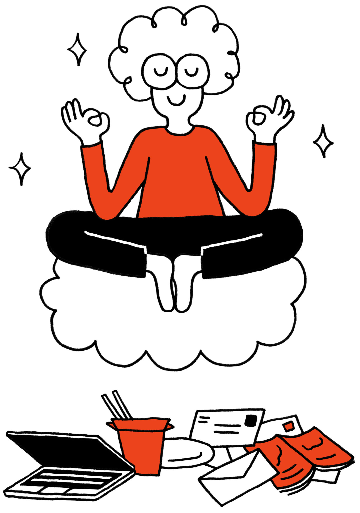

Interests & Hobbies
Snowboarding
Camping
Meditation
Tea Ceremony
Listening to Music
Hiking
One of my favorite hobbies is Meditation. Click the picture below to learn how to meditate.

Navigation
Introduction
Career Summary
Education & Qualifications